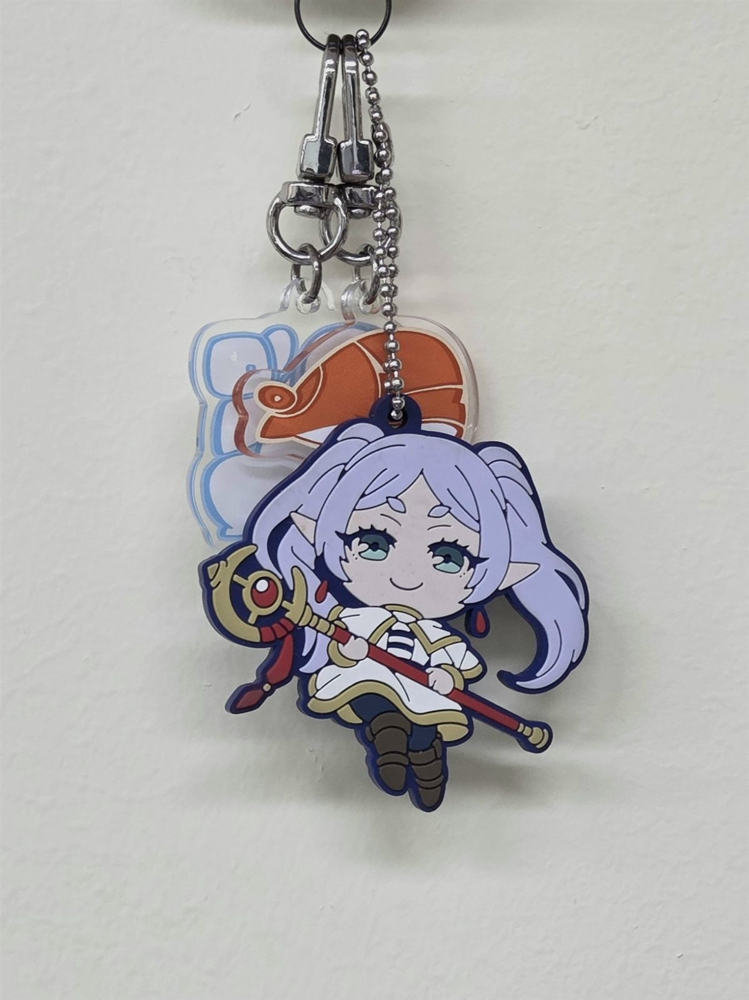
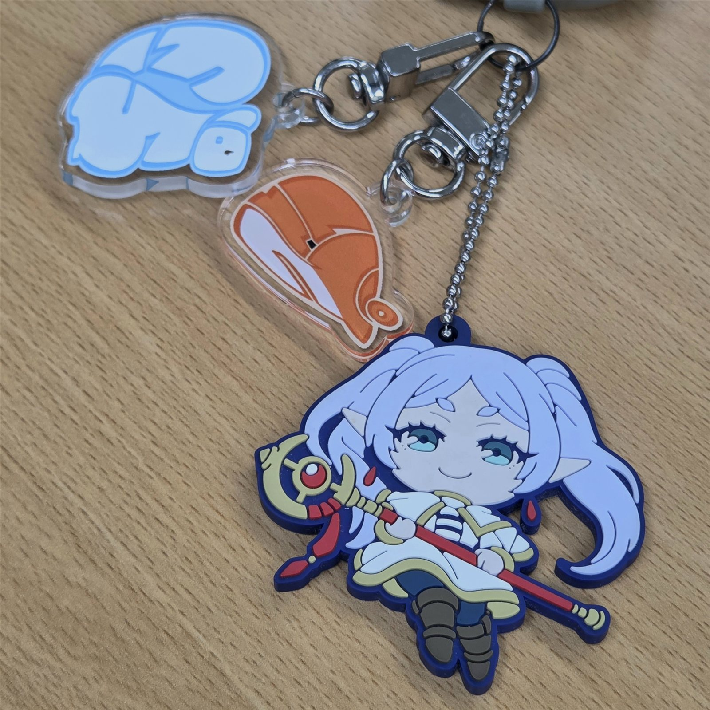
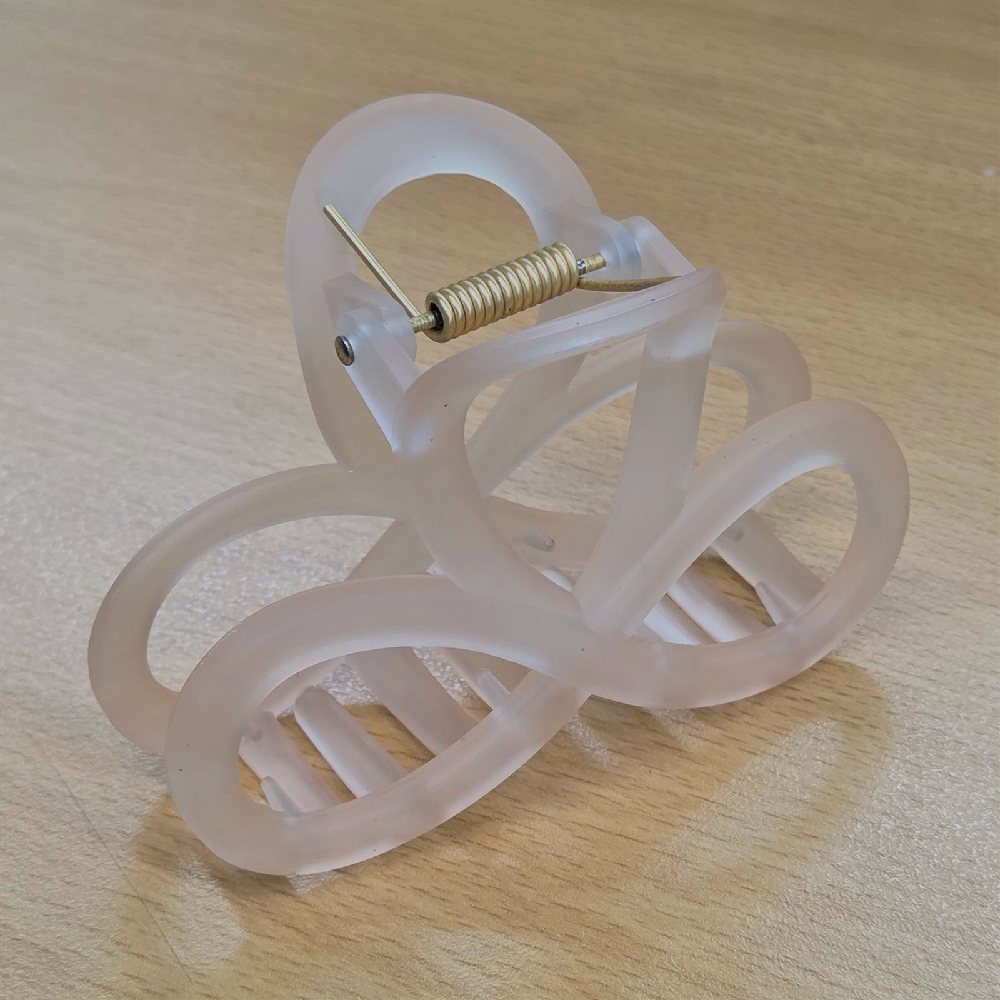
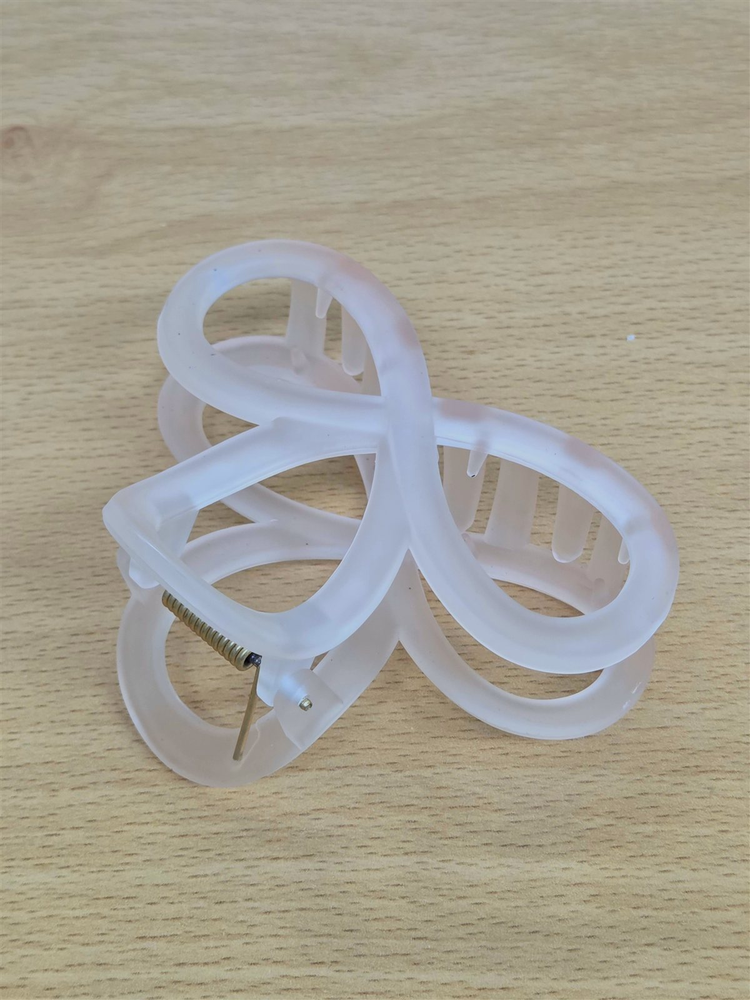
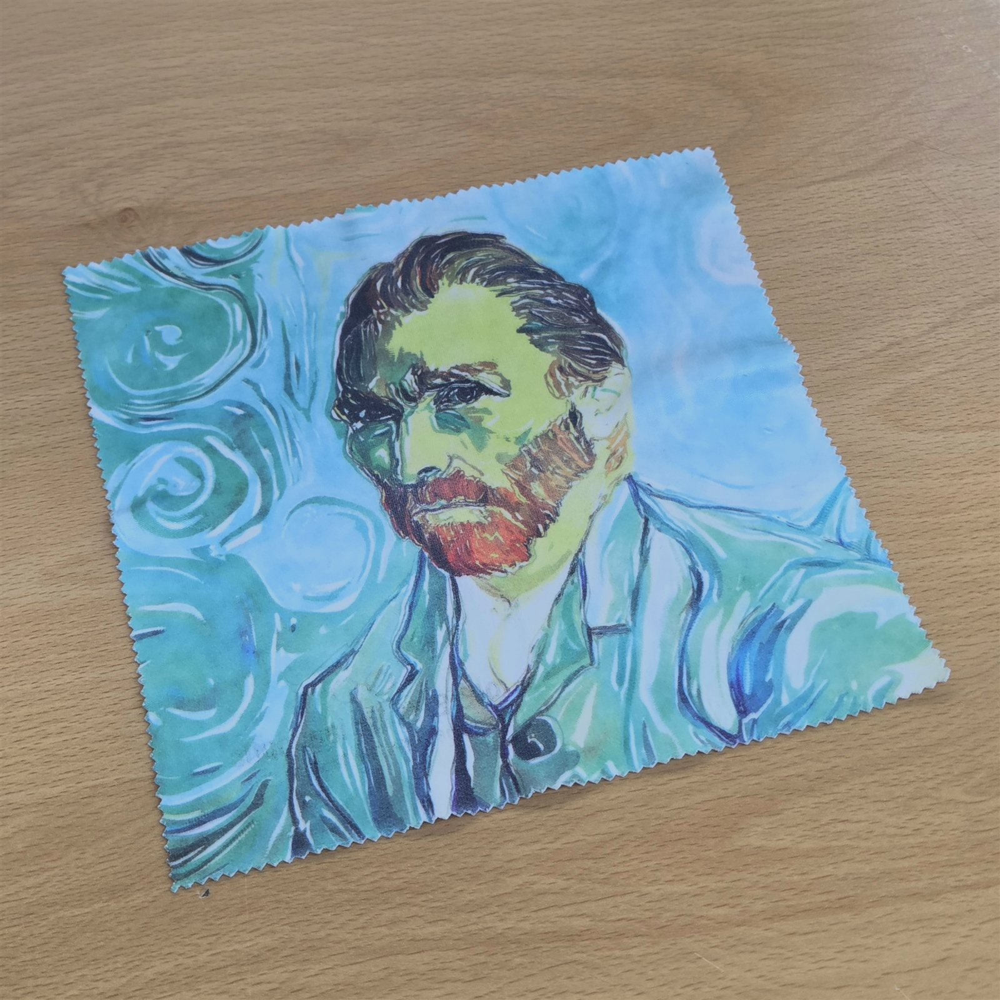
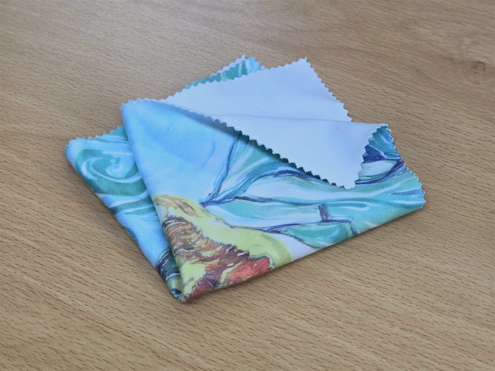
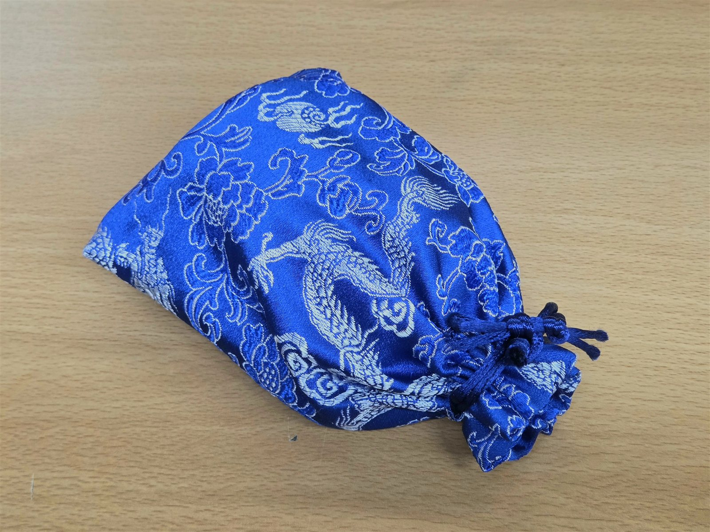
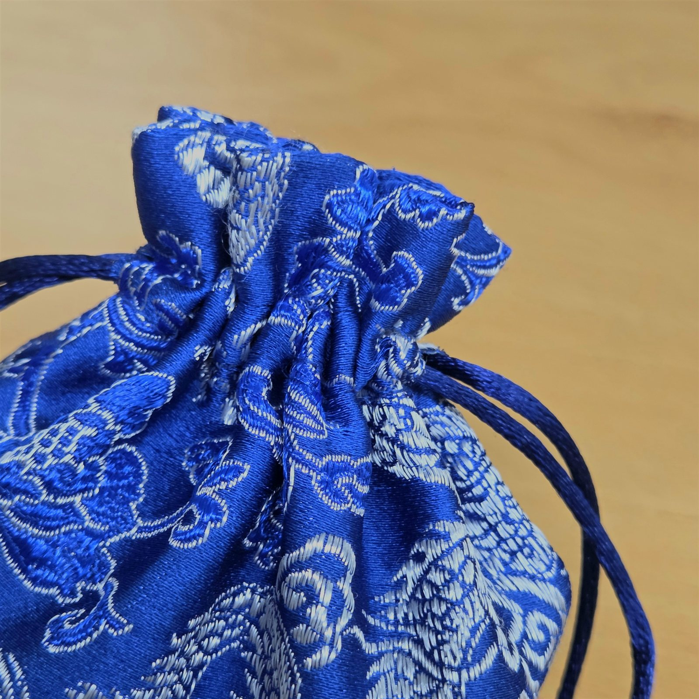
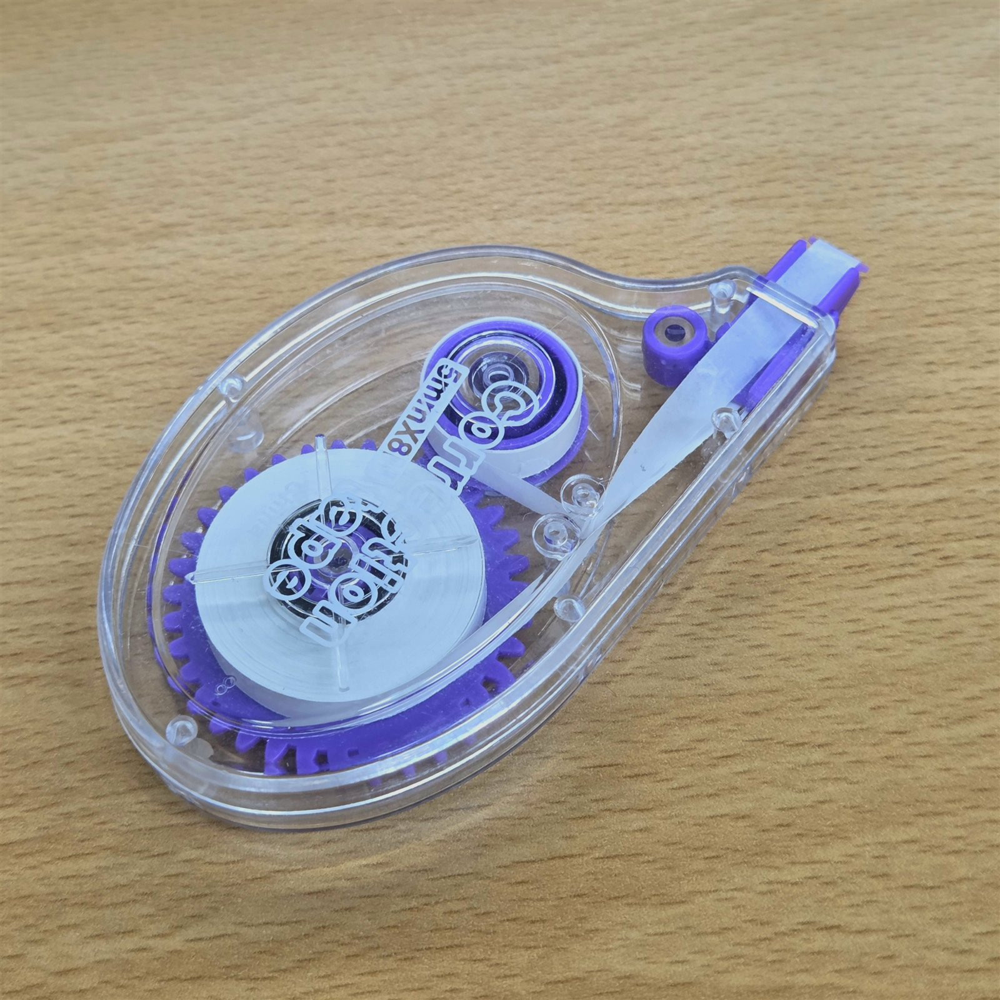
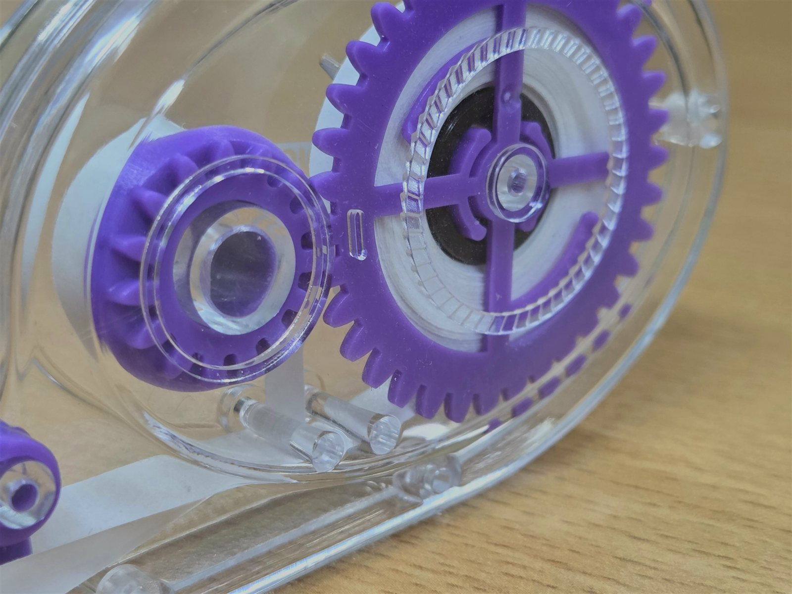

건물 사이로 보이는 하늘 · 맑은 날


고개를 들어야 보이는 하늘을 본다

나는 건물 사이의 하늘, 손끝의 작업, 다른 방향의 발걸음처럼 — 유영하는 흐름의 찰나를 본다.
건물 사이로 보이는 하늘 · 맑은 날
고개를 들어야 보이는 하늘을 본다
일하는 손 (혼자 작업 중)


손끝에서 만들어지는 것에 눈이 간다
사람이 있는 길 · 각자 걷는 길


각자 다른 방향으로 가는 발걸음을 본다
나는 카메라 밖의 찰나에도 진심인 사람을 본다.
프로듀스 101 시절, 카메라에 잡히지 않아도 계속해서 윙크를 했다

101명이라는 많은 사람들 중 눈에 띄기 위해 노력하는 모습이 기특하다
팬들이 애교나 “누나, 머리 이렇게 자르지 말라고 했잖아” 같은 투정 대사를 해달라고 하면 빠짐없이 해준다

먼 거리에서 오직 자신을 보러 온 팬들에게 그 사랑을 돌려주고 싶어 하는 것 같다
음악방송 활동을 하며 나태하게 굴지 않는다

언제 어디서나 모든 일에 진지하고 진중하게 임하는 사람 같다
걷고 웃고 인생을 즐겨


큰 이유 없이 한 번씩 머리를 환기시키고 싶을 때 · 여유로워서
여행 가서 웃고 떠들고 즐겨


삶에 활력을 불어넣고 싶을 때 · 즐거워서
관찰하고 햇빛을 만끽해


새로운 영감을 떠올리고 싶을 때 · 안정적이어서
물건에 귀여운 포인트를 더한다


내가 애정하는 캐릭터여서
머리카락을 틀어 올려 묶거나 스타일링한다


간편하고 예뻐서
핸드폰이나 아이패드를 닦는다


고흐 그림이 예뻐서
보조배터리를 보관한다


사이즈가 딱 들어맞아서
글씨를 틀렸을 때 지운다


깔끔하게 잘 지워져서